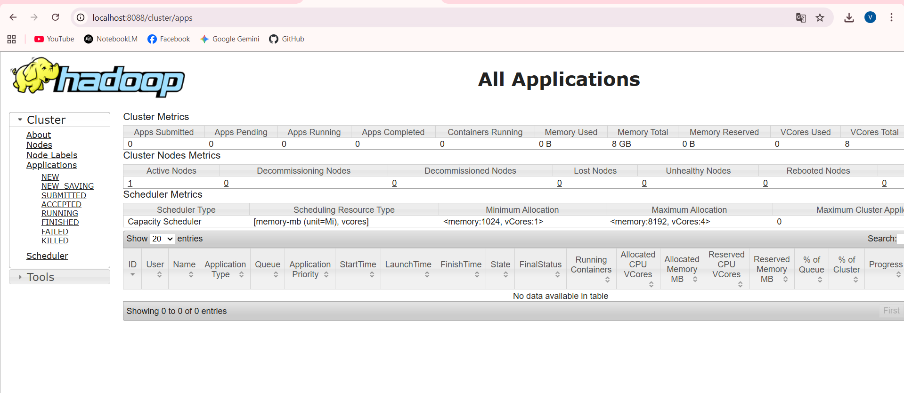

Xây dựng cụm Hadoop 5 Node sử dụng Docker Compose:
version: "3"
services:
namenode:
image: bde2020/hadoop-namenode:2.0.0-hadoop3.2.1-java8
container_name: namenode
restart: always
ports:
- 9870:9870
- 9000:9000
volumes:
- ./hadoop_data/namenode:/hadoop/dfs/name
env_file:
- ./hadoop.env
datanode:
image: bde2020/hadoop-datanode:2.0.0-hadoop3.2.1-java8
container_name: datanode
restart: always
volumes:
- ./hadoop_data/datanode:/hadoop/dfs/data
env_file:
- ./hadoop.env
resourcemanager:
image: bde2020/hadoop-resourcemanager:2.0.0-hadoop3.2.1-java8
container_name: resourcemanager
restart: always
ports:
- 8088:8088
env_file:
- ./hadoop.env
nodemanager:
image: bde2020/hadoop-nodemanager:2.0.0-hadoop3.2.1-java8
container_name: nodemanager
restart: always
env_file:
- ./hadoop.env
historyserver:
image: bde2020/hadoop-historyserver:2.0.0-hadoop3.2.1-java8
container_name: historyserver
restart: always
ports:
- 8188:8188
env_file:
- ./hadoop.envGiao diện quản lý HDFS (localhost:9870):
Danh sách các Node đang hoạt động:
